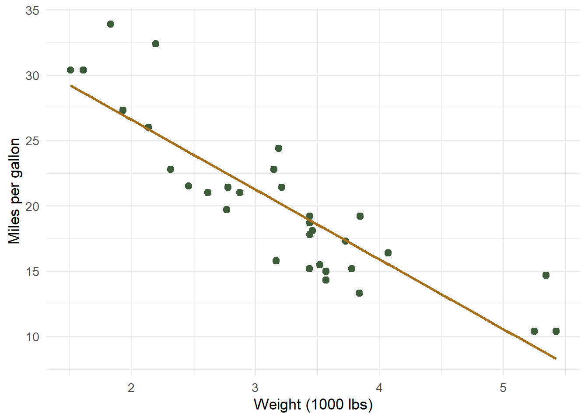

mpg wt hp
Min. :10.40 Min. :1.513 Min. : 52.0
1st Qu.:15.43 1st Qu.:2.581 1st Qu.: 96.5
Median :19.20 Median :3.325 Median :123.0
Mean :20.09 Mean :3.217 Mean :146.7
3rd Qu.:22.80 3rd Qu.:3.610 3rd Qu.:180.0
Max. :33.90 Max. :5.424 Max. :335.0
Correlations
Code
round(cor(mtcars[, c("mpg", "wt", "hp")]), 2)
mpg wt hp
mpg 1.00 -0.87 -0.78
wt -0.87 1.00 0.66
hp -0.78 0.66 1.00
A plot
Code
library(ggplot2)ggplot(mtcars, aes(wt, mpg)) +geom_point(colour ="#3c5c3a", size =2.5) +geom_smooth(method ="lm", colour ="#a86f1a", se =FALSE) +labs(x ="Weight (1000 lbs)", y ="Miles per gallon") +theme_minimal(base_size =13)

Figure 1: Fuel economy falls as vehicle weight rises.
A simple model
Code
fit <-lm(mpg ~ wt + hp, data = mtcars)summary(fit)$coefficients
Estimate Std. Error t value Pr(>|t|)
(Intercept) 37.22727012 1.59878754 23.284689 2.565459e-20
wt -3.87783074 0.63273349 -6.128695 1.119647e-06
hp -0.03177295 0.00902971 -3.518712 1.451229e-03
Wrapping up
If you can see the code, its output, and the plot above, Quarto and R are wired up correctly.